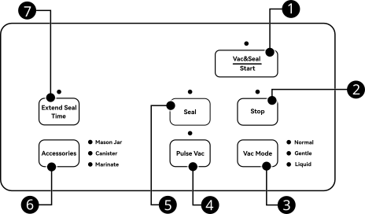

MODEL V23
Sigillatrice Sottovuoto
Manuale d'uso
Si prega di leggere attentamente questo manuale prima dell'uso e conservarlo per riferimento futuro.
Tutte le illustrazioni di prodotti e accessori in questo manuale sono solo a scopo di riferimento. A causa di aggiornamenti del prodotto, i prodotti reali potrebbero differire leggermente dalle illustrazioni.
Indice
01Istruzioni di sicurezza3
02Consigli per prodotto e sacchetti4
03Struttura del prodotto5
04Funzioni del prodotto6
05Specifiche tecniche7
06Guida operativa8
07Risoluzione dei problemi12
08Manutenzione15
09Proprietà del confezionamento sottovuoto16
10Informazioni su marchio e garanzia18
01Istruzioni di sicurezza
AVVERTENZA
- Questo apparecchio è destinato esclusivamente all'uso domestico. Non utilizzarlo per scopi diversi da quelli previsti.
- Non consentire ai bambini di giocare con l'apparecchio o il cavo di alimentazione. I bambini, le persone con mobilità ridotta o con capacità cognitive limitate devono utilizzare l'apparecchio solo sotto la supervisione di un adulto. Tenere i bambini sotto controllo durante l'uso.
- Le parti piccole e i sacchetti sottovuoto possono causare rischio di soffocamento; non consentire ai bambini di toccarli.
- Non utilizzare l'apparecchio in ambienti ad alta umidità o temperatura elevata. È vietato l'uso in presenza di gas infiammabili o esplosivi.
- Assicurarsi che la tensione di alimentazione corrisponda a quella indicata sulla targhetta dell'apparecchio.
- Non allontanarsi dall'apparecchio durante il funzionamento.
- Al termine della sigillatura, l'area di sigillatura è calda; non toccarla per evitare ustioni.
- Disconnettere l'alimentazione dopo l'uso.
- Quando si scollega la spina dalla presa, afferrare la spina e non tirare il cavo di alimentazione.
- Non immergere l'apparecchio o il cavo di alimentazione in acqua o altri liquidi.
- Il cavo di alimentazione deve essere collegato direttamente a una presa conforme alle normative di sicurezza.
- In caso di danni a spina, cavo o apparecchio, interrompere immediatamente l'uso e contattare il produttore o un centro di assistenza autorizzato; non riparare da soli.
- Non lasciare il cavo di alimentazione penzolante dal bordo del piano di lavoro, per evitare che i bambini lo tirino o che qualcuno inciampi.
ATTENZIONE
- Conservare con cura questo manuale.
- L'apparecchio non richiede lubrificanti; non utilizzare solventi organici per la pulizia.
- Durante periodi di inutilizzo prolungato, non chiudere le clip di blocco per evitare deformazioni della guarnizione.
- Non smaltire questo prodotto insieme ai rifiuti domestici; riciclare o smaltire secondo le normative locali sui rifiuti elettronici.
AVVISO
- Questo prodotto è destinato alla conservazione alimentare domestica.
- Prima del primo utilizzo, leggere integralmente questo manuale.
- Conservare lo scontrino d'acquisto per usufruire del servizio di garanzia.
02Consigli per prodotto e sacchetti
- L'apparecchio è compatibile solo con sacchetti sottovuoto dotati di canali per l'aria.
- Per oggetti con punte o spigoli, avvolgere gli angoli con fogli protettivi, carta assorbente o altro materiale morbido per evitare di perforare il sacchetto.
- I sacchetti sottovuoto possono essere riscaldati o messi nel microonde, ma è necessario praticare prima un piccolo taglio nell'angolo per far uscire l'aria.
- I sacchetti per la conservazione possono essere riutilizzati; quelli usati per riscaldamento o microonde vanno usati una sola volta. Non riutilizzare sacchetti che hanno contenuto frutti di mare o alimenti grassi.
- Posizionare il sacchetto in modo che l'apertura sia ben distesa sopra l'elemento riscaldante.
- Durante il riempimento, lasciare almeno 2 inch (5 cm) di spazio tra l'apertura del sacchetto e gli alimenti.
- Con liquidi, salse o alimenti con liquidi, evitare di bagnare l'apertura del sacchetto. Si consiglia di asciugare l'apertura dopo il riempimento per non compromettere la sigillatura.
- Per alimenti morbidi o molto umidi che devono mantenere la forma dopo il confezionamento, si può congelare prima del sottovuoto.
- Non appoggiare oggetti pesanti sul coperchio; potrebbero danneggiare l'apparecchio.
03Struttura del prodotto

Fig. 1 — Struttura del prodotto
| No. | Nome | No. | Nome |
|---|
| 1 | Maniglia di chiusura | 8 | Tubo di supporto rotolo |
| 2 | Pannello di controllo | 9 | Corpo principale |
| 3 | Porta aspirazione esterna | 10 | Staffa taglierina |
| 4 | Coperchio | 11 | Vaschetta raccogli-liquidi (camera a vuoto sotto) |
| 5 | Guarnizione di tenuta | 12 | Nastro termoresistente & elemento riscaldante |
| 6 | Anello di tenuta | 13 | Taglierina |
| 7 | Vano rotolo sacchetti | | |
NOTA
Al termine del lavoro, l'elemento riscaldante è molto caldo; non toccarlo per evitare ustioni.
04Funzioni del prodotto

Fig. 2 — Pannello di controllo
| No. / Button | Descrizione |
|---|
| 1 Vac&Seal / Start Aspira e sigilla / Avvio | Premere questo pulsante per avviare la modalità selezionata. |
| 2 Stop Stop | Premere questo pulsante durante qualsiasi processo per interrompere l'operazione. |
| 3 Vac Mode Selezione modalità vuoto | Normal (pressione predefinita) / Gentle (pressione delicata) / Liquid (alimenti liquidi) |
| 4 Pulse Vac Aspirazione manuale | Tenere premuto per il controllo manuale del vuoto; rilasciare per mettere in pausa. Premere Seal quando si raggiunge il livello desiderato. |
| 5 Seal Sigillatura | Premere questo pulsante per sigillare immediatamente. |
| 6 Accessories Accessori | Mason Jar (barattolo) / Canister (contenitore sottovuoto) / Marinate (marinatura) |
| 7 Extend Seal Time Prolunga tempo sigillatura | Premere prima dell'operazione per prolungare il tempo di sigillatura. |
05Specifiche tecniche
| Parametro | Specifica |
|---|
| Tensione | 220~240 Vac |
| Frequenza | 50 Hz |
| Potenza | 190 W |
| Pompa | Doppia pompa |
| Pressione di vuoto | -958 mbar |
| Larghezza filo saldante | 1.8 mm × 2 |
| Largh. max sacchetto | 315 mm |
| Dimensioni (L×P×A) | 380 × 205 × 155 mm |
| Peso | 3.0 kg |
06Guida operativa
6.1 Come usare la taglierina
- 1Aprire il coperchio.
- 2Aprire il supporto della taglierina.
- 3Tirare dal rotolo la lunghezza desiderata di sacchetto.
- 4Spostare la taglierina all'estrema sinistra o destra, poi abbassare il supporto sul sacchetto.
- 5Premere la taglierina e farla scorrere sul sacchetto per un taglio netto.
6.2 Come usare la funzione di sigillatura
Creare un sacchetto dal rotolo e sigillare:
- 1Creare un sacchetto aperto alle due estremità come descritto nella sezione Come usare la taglierina.
- 2Inserire l'apertura di un'estremità del sacchetto nella camera del vuoto.
- 3Chiudere il coperchio e abbassare la maniglia per bloccare il coperchio.
- 4Premere il pulsante Seal e attendere il completamento del ciclo.
Sigillare solo un sacchetto:
- 1Inserire gli alimenti nel sacchetto e posizionare l'apertura nella camera del vuoto.
- 2Chiudere il coperchio e abbassare la maniglia per bloccare il coperchio.
- 3Premere il pulsante Seal e attendere il completamento del ciclo.
6.3 Come prolungare il tempo di sigillatura
Per prolungare il tempo di sigillatura, premere il pulsante Extend Seal Time prima dell'operazione per accendere l'indicatore. L'impostazione rimane attiva. Per ripristinare il tempo predefinito, premere nuovamente il pulsante prima dell'operazione successiva. In caso di spegnimento o riavvio, il tempo di sigillatura torna alle impostazioni predefinite.
ATTENZIONE
Con Extend Seal Time attivo, la regolazione intelligente della sigillatura è temporaneamente disattivata; attendere almeno 20 s tra un ciclo e l'altro e aprire il coperchio per permettere la dissipazione del calore.
06Guida operativa (segue)
6.4 Come usare il sottovuoto e sigillatura
Sottovuoto e sigillatura di alimenti solidi:
- 1Inserire l'apertura del sacchetto nella camera del vuoto.
- 2Chiudere il coperchio e abbassare la maniglia per bloccarlo.
- 3Premere il pulsante Vac Mode per selezionare la modalità: Normal o Gentle.
- 4Premere il pulsante Vac&Seal / Start per avviare.
- 5Per interrompere, premere il pulsante Stop.
Prima di usare la modalità Gentle per oggetti delicati, si consiglia di provare con altri articoli per verificare il grado di compressione.
Sottovuoto e sigillatura di liquidi:
- 1Tenere il sacchetto in verticale; il livello del liquido deve restare sotto l'elemento riscaldante. Lasciare circa 7 inch (18 cm) tra il liquido e l'apertura.
- 2Inserire l'apertura del sacchetto nella camera del vuoto.
- 3Chiudere il coperchio e abbassare la maniglia per bloccarlo.
- 4Premere il pulsante Vac Mode e selezionare la modalità Liquid.
- 5Premere il pulsante Vac&Seal / Start per avviare.
6.5 Come usare il vuoto manuale
Metodo 1 (Passaggio a Pulse Vac durante il vuoto automatico):
- 1Tenere premuto il pulsante Pulse Vac per aspirare.
- 2Rilasciare il pulsante per sospendere l'aspirazione.
- 3Raggiunto il vuoto desiderato, premere il pulsante Seal per sigillare.
Metodo 2 (Utilizzo diretto della modalità Pulse Vac):
- 1Inserire l'apertura del sacchetto nella camera del vuoto.
- 2Chiudere il coperchio e abbassare la maniglia per bloccarlo.
- 3Tenere premuto il pulsante Pulse Vac per aspirare.
- 4Rilasciare il pulsante per sospendere l'aspirazione.
- 5Raggiunto il vuoto desiderato, premere il pulsante Seal per sigillare.
In modalità vuoto manuale, tenere premuto per aspirare e rilasciare per sospendere; la pressione viene mantenuta. Se non si effettua alcuna operazione entro 10 secondi, l'apparecchio rilascia automaticamente la pressione ed esce dalla modalità vuoto manuale.
06Guida operativa (Accessori)
6.6 Utilizzo del tubo flessibile
- Per barattoli Mason e sacchetti con zip e valvola: usare l'ugello circolare in direzione 1.
- Per contenitori sottovuoto e tappi: scegliere direzione 1 o 2 in base alla dimensione dell'apertura.
- L'ugello piatto 3 del tubo si collega all'aspirazione esterna 3 sul coperchio.
6.7 Come fare il sottovuoto nei barattoli Mason
- 1Chiudere il coperchio dell'apparecchio.
- 2Posizionare il coperchio del barattolo sull'apertura senza avvitare il collarino (se presente).
- 3Montare l'adattatore sul barattolo Mason.
- 4Inserire l'ugello piatto del tubo nell'aspirazione esterna sul coperchio.
- 5Abbassare la maniglia per bloccare il coperchio.
- 6Premere il pulsante Accessories e selezionare Mason Jar.
- 7Appoggiare l'ugello circolare sull'apertura dell'adattatore e premere leggermente con la mano.
- 8Premere il pulsante Vac&Seal / Start per avviare.
- 9Al termine, rimuovere il tubo e l'adattatore.
6.8 Come fare il sottovuoto nei contenitori
- 1Prima dell'uso, verificare che il contenitore sia compatibile con il tubo dell'apparecchio.
- 2Verificare che il contenitore sia in modalità sottovuoto (Vacuum).
- 3Inserire l'ugello piatto del tubo nell'aspirazione esterna sul coperchio.
- 4Abbassare la maniglia per bloccare il coperchio.
- 5Premere il pulsante Accessories e selezionare Canister.
- 6Appoggiare l'ugello circolare sull'apertura della valvola del contenitore e premere leggermente.
- 7Premere il pulsante Vac&Seal / Start per avviare.
- 8Al termine, rimuovere il tubo.
06Guida operativa (segue)
6.9 Come marinare
- 1Coprire gli alimenti con la marinata e metterli nel contenitore sottovuoto.
- 2Verificare che il contenitore sia in modalità sottovuoto (Vacuum).
- 3Inserire l'ugello piatto del tubo nell'aspirazione esterna sul coperchio.
- 4Inserire l'ugello circolare nell'apertura della valvola.
- 5Abbassare la maniglia per bloccare il coperchio.
- 6Premere il pulsante Accessories e selezionare Canister.
- 7Premere il pulsante Vac&Seal / Start per avviare.
- 8Al termine, rimuovere il tubo.
6.10 Guida al vano rotolo sacchetti
- L'apparecchio può contenere due rotoli (es. due rotoli da max 20 feet/6 m).
- Con un solo rotolo, la lunghezza massima è 50 feet (15 m).
- Il vano accoglie rotoli fino a 12 inch (300 mm) di larghezza. In basso è previsto uno spazio per rotoli fino a 8 inch (200 mm).
07Risoluzione dei problemi
| Problema | Possibile causa | Soluzione |
|---|
| L'apparecchio non si accende |
Il cavo non è inserito correttamente nella presa |
Verificare che il cavo sia inserito correttamente. |
| Cavo danneggiato o usurato |
Staccare la corrente e controllare il cavo; in caso di danni, rivolgersi a personale qualificato per la sostituzione. |
| Connettori del pannello o della scheda allentati |
Rivolgersi a personale qualificato per la riparazione. |
| Aspirazione insufficiente |
L'apertura del sacchetto non è completamente nella guarnizione |
Assicurarsi che l'apertura sia completamente nella guarnizione della camera inferiore. |
| Uso di sacchetti senza canali per l'aria |
Utilizzare sacchetti sottovuoto con canali per l'aria. |
| Guarnizione danneggiata, sollevata o montata male |
Controllare la guarnizione e montarla correttamente. |
| Sacchetto danneggiato o con fori |
Sostituire con un nuovo sacchetto. |
| Corpi estranei sull'apertura che impediscono la sigillatura |
Pulire l'apertura e riprovare. |
| Tempo di sigillatura eccessivo con surriscaldamento |
Aprire il coperchio, lasciare raffreddare e riprovare. |
| Sigillatura non riuscita o scarsa |
L'apertura non è posizionata correttamente sull'elemento riscaldante |
Riposizionare l'apertura, assicurandosi che sia ben distesa sull'elemento riscaldante. |
| Umidità, particelle o residui nell'area di sigillatura |
Pulire l'area di sigillatura e riprovare. |
| Barra di sigillatura non montata |
Montare la barra di sigillatura. |
| Tempo di sigillatura predefinito insufficiente |
Premere Extend Seal Time per prolungare il tempo e riprovare. |
| Il sacchetto perde aria dopo il sottovuoto |
Nastro ad alta temperatura danneggiato o staccato |
Sostituire il nastro ad alta temperatura. |
| Temperatura anomala che scioglie il sacchetto o sigillatura insufficiente |
Vedere le soluzioni per aspirazione insufficiente e sigillatura non riuscita. |
| Oggetti appuntiti che perforano il sacchetto |
Avvolgere gli spigoli con carta assorbente o fogli protettivi e usare un sacchetto nuovo. |
NOTA
Alcuni frutti e verdure, se non sbollentati correttamente prima del confezionamento, o alimenti caldi, rilasciano gas e il sacchetto non si contrae; è un comportamento normale, non una perdita.
Se nessuna delle soluzioni sopra risolve il problema, contattare l'assistenza clienti; non smontare l'apparecchio da soli.
07Risoluzione dei problemi (Accessori e allarmi)
| Problema | Possibile causa | Soluzione |
|---|
| La modalità Accessories non aspira |
L'ugello piatto non è completamente inserito nell'aspirazione esterna |
Premere e ruotare con forza l'ugello piatto fino a inserimento completo. |
| La maniglia del coperchio non è abbassata e bloccata |
Abbassare la maniglia per bloccare il coperchio e riprovare. |
| Corpi estranei su guarnizione o camera del vuoto |
Aprire il coperchio, rimuovere i corpi estranei, chiudere e riprovare. |
| Allarme errore (beep prolungato + LED lampeggianti) |
Allarme dopo aver premuto Vac&Seal/Start o Seal |
Verificare che il coperchio sia chiuso e la maniglia abbassata e bloccata. |
| Beep continuo durante il vuoto |
L'apparecchio non raggiunge la pressione target; verificare il blocco della maniglia e l'integrità del sacchetto; sostituire con un sacchetto nuovo. |
07Risoluzione dei problemi (segue)
Procedura in caso di liquidi entrati nell'apparecchio
Liquido nella camera del vuoto:
- 1Spegnere immediatamente l'alimentazione e attendere almeno 5 minuti per il raffreddamento dell'elemento riscaldante.
- 2Rimuovere il vassoio del liquido e asciugare il liquido.
- 3Asciugare il liquido nella camera del vuoto.
- 4Posizionare carta da cucina o un vassoio sotto l'apparecchio e riaccendere.
- 5Chiudere il coperchio, tenere premuto Pulse Vac per 20 secondi, poi premere Stop per rilasciare; ripetere 5 volte per espellere il liquido dai tubi interni.
- 6Aprire il coperchio, posizionare carta da cucina o un vassoio sotto l'apparecchio e lasciare asciugare in luogo ventilato per 48 ore senza capovolgere l'apparecchio.
Liquido sull'elemento riscaldante:
- 1Non capovolgere l'apparecchio; spegnere l'alimentazione, attendere 10 minuti per il raffreddamento e lo scarico del liquido interno.
- 2Pulire e asciugare il liquido dal vassoio, dalla camera del vuoto e dalla base.
- 3Aprire il coperchio, posizionare carta da cucina o un vassoio sotto l'apparecchio e lasciare asciugare in luogo ventilato per 24 ore senza capovolgere.
- 4Posizionare carta da cucina o un vassoio sotto l'apparecchio e riaccendere.
- 5Chiudere il coperchio, tenere premuto Pulse Vac per 20 secondi, poi premere Stop per rilasciare; ripetere 5 volte per espellere il liquido dai tubi interni.
- 6Aprire il coperchio, posizionare carta da cucina o un vassoio sotto l'apparecchio e lasciare asciugare in luogo ventilato per 48 ore senza capovolgere.
ATTENZIONE
Se non si pulisce regolarmente, i tubi interni possono intasarsi e compromettere l'aspirazione; in tal caso contattare l'assistenza per la sostituzione dei tubi.
08Manutenzione
- Assicurarsi che il piano di lavoro sia piano, pulito e asciutto.
- Quando l'apparecchio non è in uso, non chiudere le clip di blocco per evitare che la guarnizione sia compressa a lungo.
- Pulire settimanalmente guarnizione, barra di sigillatura, elemento riscaldante, vassoio del liquido e camera del vuoto.
- L'elemento riscaldante e la barra di sigillatura restano caldi dopo l'uso; attendere il raffreddamento prima della manutenzione.
- Scollegare l'alimentazione prima della pulizia.
- Usare una spazzola morbida per guarnizione, barra di sigillatura, elemento riscaldante, vassoio, camera del vuoto e tubo; evitare spazzole dure che potrebbero danneggiare l'apparecchio.
- Al termine di ogni giornata, rimuovere e pulire il vassoio del liquido e rimuovere residui e polvere dalla camera del vuoto con un panno umido o carta.
- Dopo ogni utilizzo, controllare che la guarnizione non sia gravemente deformata e che il nastro ad alta temperatura non sia danneggiato o staccato; in caso affermativo, sostituire.
- Il vassoio del liquido e il tubo non supportano la pulizia ad alta temperatura (es. lavastoviglie).
09Proprietà del confezionamento sottovuoto
Il confezionamento sottovuoto prolunga la durata degli alimenti rimuovendo la maggior parte dell'aria dal contenitore sigillato e impedendone il ritorno, riducendo così l'ossidazione. Aiuta a mantenere sapore e qualità. Inoltre limita la crescita di microrganismi aerobici; in alcune condizioni si possono osservare:
- Muffa — La muffa non si sviluppa in ambiente a basso ossigeno; il sottovuoto ne limita la crescita.
- Lieviti — I lieviti necessitano di acqua, zucchero e temperatura moderata; possono sopravvivere con o senza aria. Per rallentarne la crescita serve refrigerazione; il congelamento li inibisce efficacemente.
- Batteri — Causano odori sgradevoli, scolorimento o rammollimento. In condizioni adeguate, il Clostridium botulinum può crescere senza aria e non è rilevabile da odore o sapore.
Come per qualsiasi altro metodo di conservazione, è importante controllare gli alimenti prima del consumo. A -4°C o meno si riduce significativamente la crescita microbica. Per la conservazione a lungo termine si consiglia il congelamento dopo il sottovuoto.
NOTICE
Il confezionamento sottovuoto non sostituisce refrigerazione o congelamento. Gli alimenti deperibili che richiedono refrigerazione devono restare refrigerati o congelati anche dopo il sottovuoto.
Guida alla conservazione
- Le verdure vanno sbollentate prima del sottovuoto: immergerle in acqua bollente, poi in acqua fredda, infine asciugarle con un panno prima del confezionamento.
- Le crucifere (broccoli, germogli, cavolo, ecc.) rilasciano gas naturalmente durante la conservazione; dopo cottura e sottovuoto conservare in frigorifero.
- Non conservare sottovuoto aglio o funghi: il sottovuoto può produrre sostanze dannose per la salute.
09Proprietà del confezionamento sottovuoto (segue)
Riferimento durata conservazione sottovuoto
| Metodo di conservazione | Categoria alimenti | Conservazione normale | Sottovuoto |
|---|
| Congelamento | Carne | 6 mesi | 15–20 mesi |
| Pesce e frutti di mare | 6 mesi | 10–12 mesi |
| Frutta secca e caffè | 6–9 mesi | 18–24 mesi |
|
| Refrigerazione | Carne | 2–3 giorni | 12–13 giorni |
| Pesce e frutti di mare | 2–3 giorni | 6–8 giorni |
| Carne cotta | 2–3 giorni | 10–14 giorni |
| Uova | 2–3 giorni | 30–50 giorni |
| Verdure | 2–3 giorni | 7–10 giorni |
|
| Temperatura ambiente | Pane | 1–2 giorni | 6–8 giorni |
| Biscotti confezionati | 4–6 mesi | 12 mesi |
| Pasta | 5–6 mesi | 12 mesi |
| Riso | 5–6 mesi | 12 mesi |
| Farina | 4–5 mesi | 12 mesi |
| Prodotti secchi | 3–4 mesi | 12 mesi |
| Caffè / Tè / Latte in polvere | 2–6 mesi | 12 mesi |
10Informazioni su marchio e garanzia
Grazie per aver acquistato Vesta Sigillatrice Sottovuoto. Per qualsiasi domanda, contattarci:
support@vestaprecision.com | www.vestaprecision.com
Informazioni sul marchio
| Marchio | Precision Appliance Technology, Inc. |
| Indirizzo | 3120 139th Ave SE Suite 500 Bellevue, WA 98005 |
| Sito web | www.vestaprecision.com |
| Assistenza clienti | support@vestaprecision.com |
Produttore autorizzato
| Produttore | 广州亚俊氏真空科技股份有限公司
Guangzhou Argion Electric Appliance Co., Ltd. |
| Indirizzo | No. 1, Qiye Road, Nancun Town, Panyu District, Guangzhou, Guangdong, China |
| Sito web | www.argiontechnology.com |
Informazioni sulla garanzia
Questo prodotto è coperto da garanzia limitata di 2 anni. È possibile richiedere la sostituzione in garanzia entro 2 anni dalla data di acquisto originale. Per usufruire della garanzia è necessario:
- Aver acquistato il prodotto negli ultimi 2 anni.
- Disporre del numero d'ordine originale o dell'e-mail usata per l'acquisto.
- In caso di acquisto tramite rivenditore, fornire copia dello scontrino originale.
Per richiedere la garanzia, inviare un'e-mail a: support@vestaprecision.com
Scheda garanzia
| Nome cliente | |
| Indirizzo | |
| Città / Provincia / CAP | |
| Numero di telefono | |
| Indirizzo e-mail | |
| Data di acquisto originale | |
| Modello prodotto | |
| Numero di serie (se applicabile) | |
| Nome rivenditore | |